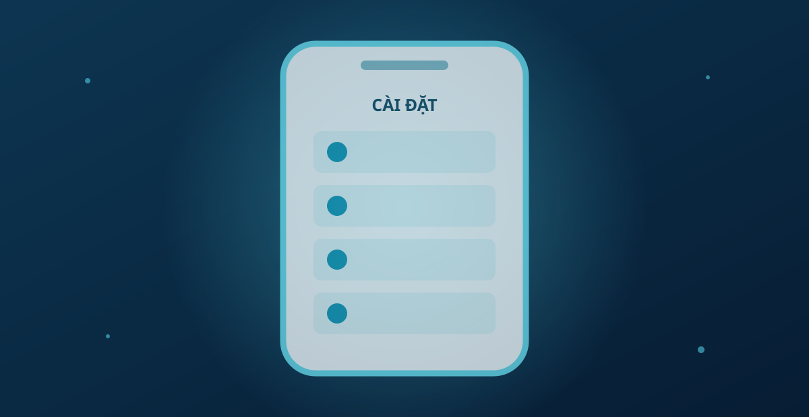
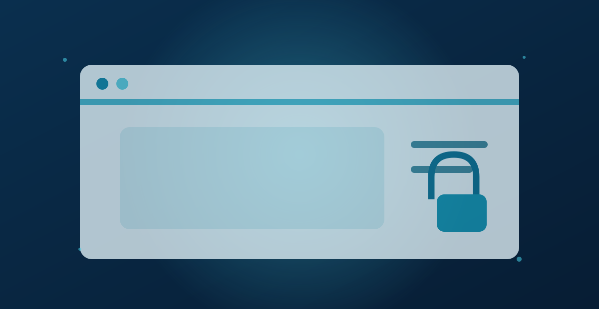
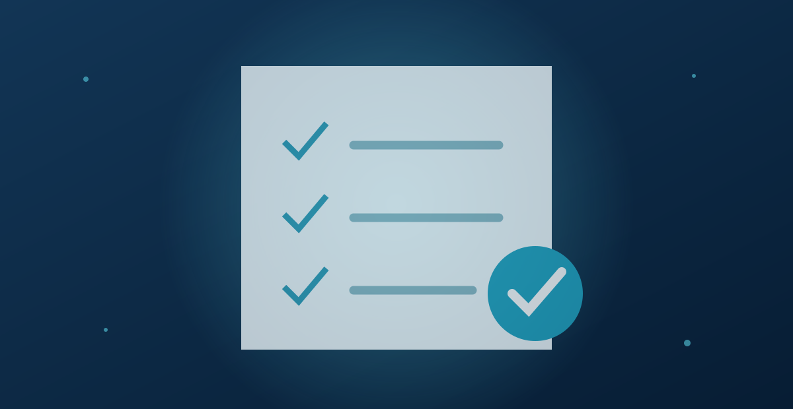

Cách kiểm tra quyền ứng dụng để bảo vệ quyền riêng tư
Cập nhật:
Khi cài đặt ứng dụng trên điện thoại, bạn có thể được yêu cầu cấp quyền truy cập vị trí, camera, micro, danh bạ hoặc ảnh. Những quyền này phục vụ các chức năng nhất định, nhưng không phải ứng dụng nào cũng cần sử dụng chúng thường xuyên.

Biết cách kiểm tra quyền ứng dụng giúp bạn xem ứng dụng nào được phép truy cập dữ liệu và điều chỉnh quyền khi cần thiết. Chỉ mất vài phút kiểm tra, bạn có thể quản lý quyền truy cập phù hợp hơn, góp phần bảo vệ quyền riêng tư mà vẫn giữ được những tính năng mình thường sử dụng.
Quyền truy cập ứng dụng là gì?
Quyền truy cập ứng dụng là sự cho phép để ứng dụng sử dụng một số dữ liệu hoặc chức năng trên thiết bị, chẳng hạn như vị trí, camera, micro, danh bạ và hình ảnh.
Ví dụ, ứng dụng bản đồ có thể cần quyền vị trí để xác định nơi bạn đang đứng, trong khi ứng dụng gọi điện cần quyền micro để truyền giọng nói. Tuy nhiên, bạn vẫn nên xem xét liệu quyền được yêu cầu có phù hợp với chức năng của ứng dụng hay không.
Vì sao nên kiểm tra quyền truy cập ứng dụng?
Sau một thời gian sử dụng, bạn có thể không còn nhớ mình đã cấp những quyền nào cho từng ứng dụng. Một ứng dụng từng cần vị trí có thể không còn cần quyền này nếu bạn không sử dụng tính năng liên quan.
Kiểm tra lại danh sách quyền giúp bạn phát hiện những quyền không cần thiết và hạn chế truy cập dữ liệu nhạy cảm. Nếu chưa rõ lý do một ứng dụng yêu cầu quyền, hãy tìm hiểu trước khi cho phép. Việc yêu cầu quyền không đồng nghĩa với việc ứng dụng không an toàn; điều quan trọng là quyền đó có phù hợp với chức năng thực tế hay không.
Cách kiểm tra quyền ứng dụng trên Android
Kiểm tra quyền của từng ứng dụng
Mở Cài đặt (Settings) trên điện thoại.
Chọn Ứng dụng (Apps) hoặc mục quản lý ứng dụng tương đương.
Chọn ứng dụng bạn muốn kiểm tra.
Nhấn Quyền (Permissions) để xem các quyền đã được cấp hoặc bị từ chối.
Điều chỉnh những quyền không cần thiết theo nhu cầu sử dụng.
Tên mục cài đặt và các tùy chọn có thể khác nhau tùy theo thiết bị và phiên bản Android.
Kiểm tra theo từng loại quyền
Trong phần cài đặt quyền riêng tư, hãy tìm Trình quản lý quyền (Permission Manager) để xem ứng dụng nào được phép truy cập vị trí, camera hoặc micro. Trên một số thiết bị, Bảng điều khiển quyền riêng tư (Privacy Dashboard) còn cho phép xem thời điểm ứng dụng sử dụng các quyền được hỗ trợ.
Tên menu có thể khác nhau tùy thiết bị. Bạn có thể tham khảo hướng dẫn chính thức của Google về cách thay đổi quyền ứng dụng trên Android.
Xem xét những quyền không còn cần thiết
Sau khi kiểm tra, hãy cân nhắc thu hồi những quyền không còn phù hợp với nhu cầu sử dụng. Ví dụ, bạn có thể giới hạn quyền vị trí nếu ứng dụng không cần truy cập liên tục. Tuy nhiên, một số chức năng có thể bị hạn chế sau khi thu hồi quyền.
Cách kiểm tra quyền ứng dụng trên iPhone
Kiểm tra quyền của từng ứng dụng
Mở Cài đặt (Settings) trên iPhone.

Chọn Quyền riêng tư & Bảo mật (Privacy & Security).
Chọn loại dữ liệu hoặc chức năng như vị trí, camera, micro hoặc danh bạ.
Xem danh sách ứng dụng có quyền truy cập.
Chọn ứng dụng và điều chỉnh quyền theo nhu cầu.
Với quyền vị trí, bạn nên xem xét các lựa chọn được cung cấp và chỉ cho phép phạm vi truy cập phù hợp với chức năng cần sử dụng.
Kiểm tra Báo cáo quyền riêng tư của ứng dụng
Trên các phiên bản iOS hỗ trợ, Báo cáo quyền riêng tư của ứng dụng (App Privacy Report) cung cấp thông tin về việc ứng dụng sử dụng các quyền đã được cấp và hoạt động mạng trong phạm vi báo cáo ghi nhận.
Bạn có thể kết hợp thông tin này với việc kiểm tra quyền truy cập để hiểu rõ hơn cách ứng dụng hoạt động. Xem hướng dẫn của Apple về cách kiểm soát thông tin được chia sẻ trên iPhone.
Những loại quyền ứng dụng cần chú ý
Tên quyền và phạm vi truy cập có thể khác nhau tùy hệ điều hành và phiên bản thiết bị.
Dấu hiệu cho thấy bạn nên kiểm tra quyền ứng dụng kỹ hơn
Bạn nên kiểm tra kỹ nếu ứng dụng yêu cầu quyền không phù hợp với chức năng hoặc không giải thích rõ lý do. Chẳng hạn, ứng dụng đèn pin yêu cầu truy cập danh bạ dù không có tính năng liên quan là dấu hiệu đáng lưu ý.
Hãy thận trọng hơn nếu ứng dụng yêu cầu bật cài đặt bị hạn chế hoặc tải thêm tệp từ nguồn không rõ ràng. Google cung cấp hướng dẫn về các cài đặt bị hạn chế trên Android để giúp người dùng hiểu rõ hơn những trường hợp cần chú ý.
Nếu tìm thấy thông tin ứng dụng qua một trang thương hiệu như RikvipApp, hãy kiểm tra tên miền, thông tin nhà phát triển và nguồn tải trước khi cài đặt. Không nên chỉ dựa vào tên thương hiệu hoặc giao diện trang web để đánh giá mức độ an toàn.
Chỉ riêng một quyền truy cập không phù hợp chưa đủ để kết luận rằng ứng dụng có chứa mã độc. Bạn nên xem xét thêm chức năng, nguồn cài đặt và thông tin có thể kiểm chứng trước khi đưa ra quyết định.
Nên làm gì khi phát hiện quyền ứng dụng không phù hợp?
Xem lại mục đích sử dụng: Xác định ứng dụng có thực sự cần quyền đó không.
Thu hồi hoặc giới hạn quyền: Điều chỉnh quyền trong phần cài đặt của thiết bị.
Kiểm tra nguồn cài đặt: Xác minh nhà phát triển nếu ứng dụng đến từ nguồn không rõ ràng.

Gỡ ứng dụng nếu cần: Cân nhắc gỡ cài đặt nếu ứng dụng có dấu hiệu đáng ngờ hoặc không còn cần thiết.
Lưu ý, thu hồi quyền không đồng nghĩa với việc dữ liệu đã thu thập trước đó sẽ bị xóa. Nếu muốn yêu cầu xóa dữ liệu, bạn nên xem chính sách quyền riêng tư hoặc liên hệ với đơn vị cung cấp dịch vụ.
Câu hỏi thường gặp về quyền truy cập ứng dụng
Bao lâu nên kiểm tra quyền ứng dụng một lần?
Bạn có thể kiểm tra định kỳ hoặc sau khi cài ứng dụng mới, cập nhật hệ điều hành hay thay đổi nhu cầu sử dụng.
Có nên từ chối tất cả quyền truy cập ứng dụng không?
Không nhất thiết. Bạn nên đánh giá từng quyền theo chức năng của ứng dụng và chỉ cho phép phạm vi truy cập phù hợp.
Thu hồi quyền có xóa dữ liệu ứng dụng đã thu thập không?
Không. Thu hồi quyền chủ yếu hạn chế việc truy cập tiếp theo. Dữ liệu đã được thu thập hoặc lưu trữ trước đó có thể vẫn còn; bạn cần liên hệ với đơn vị cung cấp dịch vụ nếu muốn yêu cầu xóa.
Làm thế nào để biết ứng dụng có đang truy cập dữ liệu bất thường không?
Bạn có thể xem Bảng điều khiển quyền riêng tư trên Android hoặc Báo cáo quyền riêng tư của ứng dụng trên iPhone nếu thiết bị hỗ trợ. Những thông tin này giúp bạn kiểm tra hoạt động được ghi nhận nhưng không tự động kết luận ứng dụng an toàn hay nguy hiểm.
Vì sao một số ứng dụng yêu cầu quyền ngay khi mở lần đầu?
Ứng dụng có thể cần quyền để thực hiện một chức năng cụ thể. Nếu chưa rõ mục đích, bạn có thể từ chối trước và tìm hiểu thêm rồi mới quyết định.
Kết luận
Kiểm tra quyền ứng dụng giúp bạn biết ứng dụng nào có thể truy cập dữ liệu trên điện thoại và điều chỉnh khi cần thiết. Hãy ưu tiên rà soát các quyền nhạy cảm như vị trí, camera, micro và danh bạ, đồng thời chỉ giữ những quyền phù hợp với chức năng bạn thực sự sử dụng.